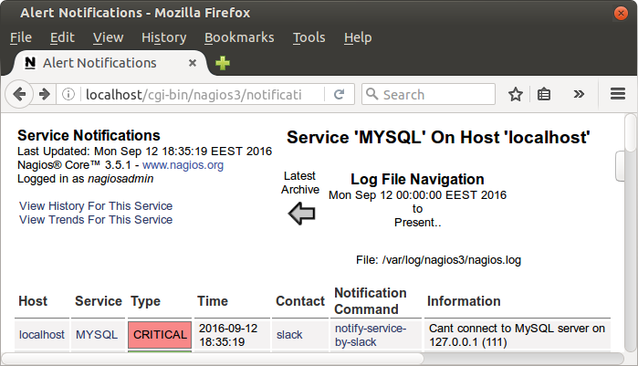
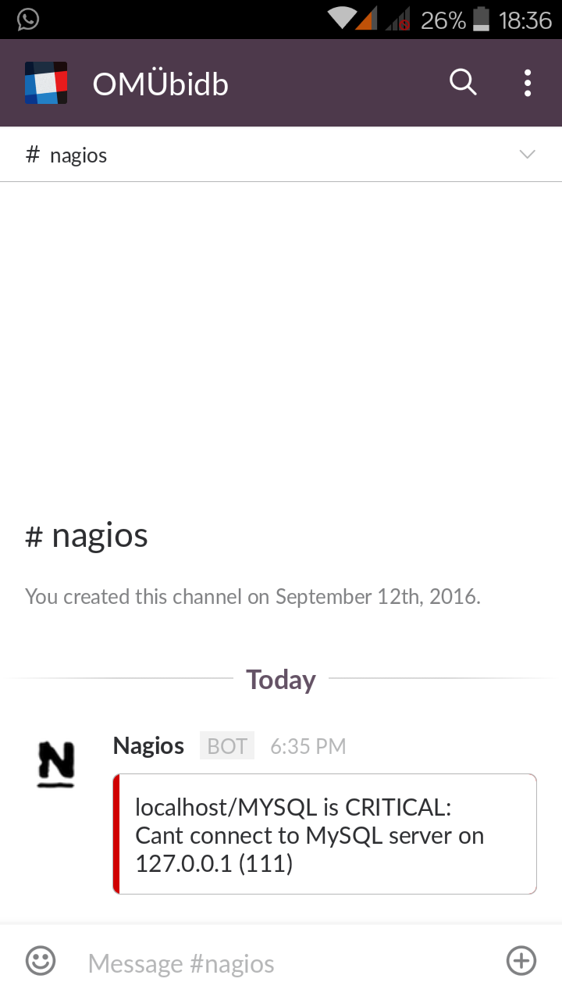

Nagios ağ üzerinde bulunan sistemleri monitör etmek için kullanılan bir yazılımdır. Yazılım sayesinde tüm aktif cihazlarını sizlere sunmuş olduğu arayüz üzerinden monitör edebilirsiniz. Nagios ile birlikte makinalara farklı görev tanımları gerçekleştirebilir ve durum maili alabilirsiniz. Buraya tıklayarak Nagios'a ulaşabilirsiniz.
Slack Nagios Entegrasyonu
https://my.slack.com/services/new/nagios adresinde yer alan "Add Nagios integration" kısmı içerisinde yer alan Setup Instructions başlığı altında kurulum talimatlarına ulaşabilirsiniz. Sizler için takımınıza ait kanal ismi ve token bilgisi dinamik olarak üretilecektir.
wget https://raw.github.com/tinyspeck/services-examples/master/nagios.pl
cp nagios.pl /usr/local/bin/slack_nagios.pl
chmod 755 /usr/local/bin/slack_nagios.pl
slack_nagios.pl dosyası içerisinde bizlere özel teamname ve token bilgisini düzenleyelim.
my $opt_domain = "teamname.slack.com"; # Your team's domain
my $opt_token = "token"; # The token from your Nagios services page
Nagios bildirimlerin kimlere gönderileceği dair yapılandırma ayarlarını /etc/nagios3/conf.d/contacts_nagios2.cfg dosyasında tutmaktadır.
define contact {
contact_name slack
alias Slack
service_notification_period 24x7
host_notification_period 24x7
service_notification_options w,u,c,r
host_notification_options d,r
service_notification_commands notify-service-by-slack
host_notification_commands notify-host-by-slack
}
Yukarıdaki contact tanımlaması ile birlikte yeni bir bildirim türü belirledik.
Service Notification Options parametreleri
| Parametre | Açıklama |
|---|---|
| w | Warning durumlarında bildirim gönderir. |
| u | Unknown durumlarında bildirim gönderir. |
| c | Kritik durumlarda bildirim gönderir. |
| r | Servisin tekrar ayağa kalkma durumunda bildirim gönderir. |
| f | Servisin start/stop durum analizini gönderir. |
| s | Zamanlanmış aralıklarda bildirim gönderir. |
Host Notification Options parametreleri
| Parametre | Açıklama |
|---|---|
| d | Hostun down olması durumunda bildirim gönderir. |
| u | Hostun UNREACHABLE olduğu durumlarda bildirim gönderir. |
| r | Hostun tekrar ayağa kalkma durumunda bildirim gönderir. |
| f | Hostun start/stop durum analizini gönderir. |
| s | Zamanlanmış aralıklarda bildirim gönderir. |
Nagios bildirim komutlarını tanımlayalım
Contact profilini tanımlarken service_notification_commands ve host_notification_commands parametrelerini kullanmıştım. Şimdi commands.cfg dosyası içerisinde bu komutlarını tanımlayalım. Bu dosyayı "/etc/nagios3/commands.cfg" adresinden ulaşabilirsiniz.
define command {
command_name notify-service-by-slack
command_line /usr/local/bin/slack_nagios.pl -field slack_channel=#nagios -field HOSTALIAS="$HOSTNAME$" -field SERVICEDESC="$SERVICEDESC$" -field SERVICESTATE="$SERVICESTATE$" -field SERVICEOUTPUT="$SERVICEOUTPUT$" -field NOTIFICATIONTYPE="$NOTIFICATIONTYPE$"
}
define command {
command_name notify-host-by-slack
command_line /usr/local/bin/slack_nagios.pl -field slack_channel=#nagios -field HOSTALIAS="$HOSTNAME$" -field HOSTSTATE="$HOSTSTATE$" -field HOSTOUTPUT="$HOSTOUTPUT$" -field NOTIFICATIONTYPE="$NOTIFICATIONTYPE$"
}
Ben Nagios üzerine MySQL server kontrolünü de eklemiştim. Şimdi MySQL servisimizi durduralım. 18:34:36'da MySQL servisi durdurdum.

18:35:19'da da Nagios MySQL servisine erişemediğine dair bildirimi göndermiş. 
Aynı esnada cep telefonuma da bildirim geldi. 